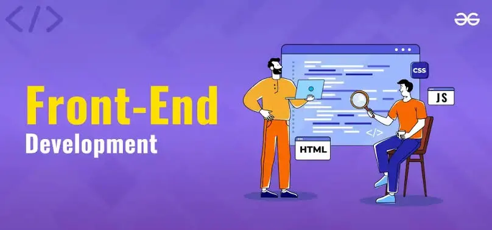

Frontend là phần quan trọng của phát triển web, bao gồm mọi thứ mà người dùng có thể nhìn thấy và tương tác trực tiếp trang web

HTML: Ngôn ngữ đánh dấu siêu văn bản, là nền tảng để xây dựng cấu trúc của trang web.
CSS: Ngôn ngữ để định dạng và tạo kiểu cho trang web, giúp trang web trở nên hấp dẫn và dễ sử dụng.
JavaScript: Ngôn ngữ lập trình giúp làm cho trang web trở nên động, với các tính năng như xử lý sự kiện, hiệu ứng động và kết nối với máy chủ.
Frontend giúp tạo ra một trải nghiệm người dùng mượt mà và dễ dàng tiếp cận.Những nhà phát triển Frontend làm đảm bảo trang web tương thích trên các thiết bị và các trình duyệt khác nhau